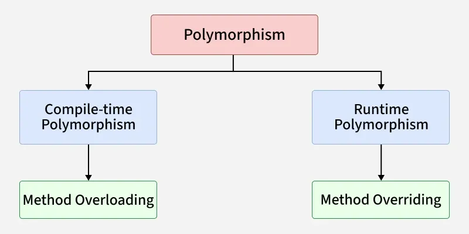
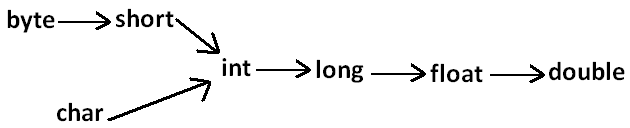
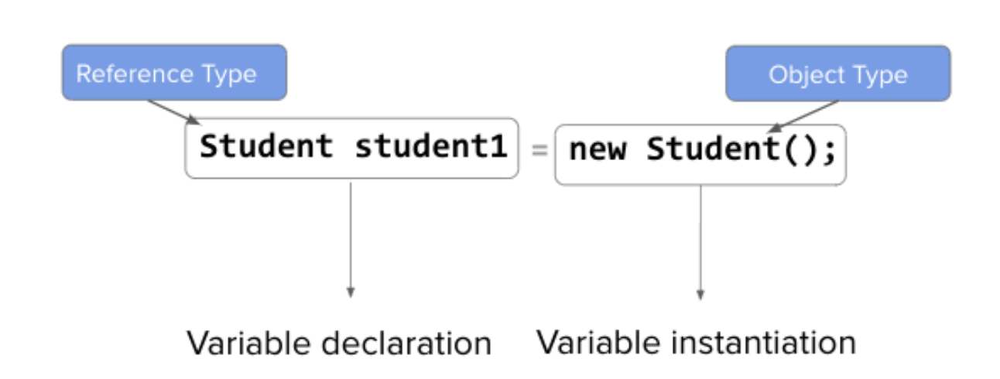
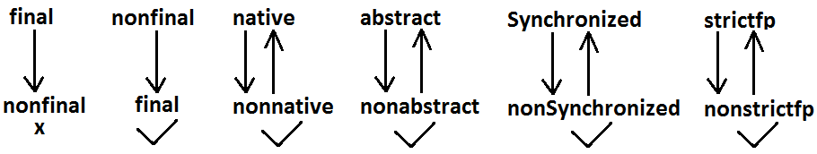
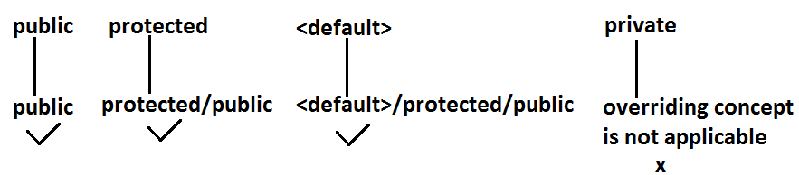

OOP Concepts
Procedural vs OOPS
“Procedural programming focuses on functions and execution flow, while OOPS models real-world entities using objects, providing better security, reusability, and maintainability.”
OOPS gives importance to data.
Objects and classes
Class (Class has properties and Behaviors)
A class is like a blueprint or design.
- Car class = design of a car
It defines what a car has and what a car can do
Example (conceptually):
Properties: color, speed, fuelType
Behaviors: start(), accelerate(), brake()
🧠 Think of it as the car design document.
Object
An object is a real instance created from the class.
- If Car is the blueprint
- BMW, Tata, VW are objects
Example:
Car car1 = Tata (Red, CNG)
Car car2 = VW (White, Petrol)
🧠 You can create many cars from the same blueprint.
Data hiding
- Our internal data should not go out directly. That is outside person can't access our internal data directly.
- By using private modifier we can implement data hiding.
- The main advantage of data hiding is security.
- Example:
public class BankAccount {
private double balance;
}Abstraction
- Hide internal implementation and just highlight the set of services, is called abstraction.
- By using abstract classes and interfaces we can implement abstraction.
public interface PaymentService {
void pay(double amount);
}- User knows what pay() does, not how it’s implemented.
Encapsulation
Encapsulation = bundling data + methods + controlling access
In Java, encapsulation is achieved using:
- Classes
- Access modifiers (private, protected, public)
- Getter / setter methods
public class BankAccount {
private double balance; // data hiding
public void deposit(double amount) {
balance += amount;
}
public double getBalance() {
return balance;
}
}Tightly encapsulated class
A class is said to be tightly encapsulated if every data member of the class is private, ensuring complete data hiding and controlled access.
public class User {
private String username;
private String email;
public User(String username, String email) {
this.username = username;
this.email = email;
}
public String getUsername() {
return username;
}
public void updateEmail(String email) {
this.email = email;
}
}Notes:
- Encapsulation depends only on instance variables, not methods.
- Inheritance can break tight encapsulation
- If any parent class has a non-private variable, the child class is not tightly encapsulated.
IS-A Relationship(inheritance) :
- By using "extends" and "implements" keywords we can implement IS-A relationship.
- extends (class → class)
- implements (class → interface)
Is-A with Class inheritance
public class Test {
public static void main(String[] args) {
Animal animal = new Animal();
animal.eat(); // -> "Animal eats"
Animal animalDog = new Dog();
animalDog.eat(); // -> "Animal eats"
animalDog.bark(); // -> ❌ method not available
Dog dog = new Dog();
dog.eat(); // -> "Animal eats"
dog.bark(); // -> "Dog barks"
Dog dogAnimal = new Animal(); // -> ❌ CE
}
}
class Animal {
void eat() {
System.out.println("Animal eats");
}
}
class Dog extends Animal {
void bark() {
System.out.println("Dog barks");
}
}Is-A with Interface
interface Vehicle {
void move();
}
class Car implements Vehicle {
public void move() {
System.out.println("Car moves");
}
}🧠 How to identify Is-A relationship (interview trick)
Ask: “Can I say X is a Y without sounding wrong?”
- Dog is an Animal ✅
- Car is a Vehicle ✅
- Employee is a Person ✅
- Engine is a Car ❌ (that’s Has-A)
Multiple inheritance
- Multiple inheritance means a class inherits from more than one parent class.
- In simple words:
One child → multiple parents A
/ \
B C
\ /
D- ❌ Java does NOT support multiple inheritance with classes
class A { }
class B { }
// ❌ Compile-time error
class C extends A, B { }The Diamond Problem
- Diamond Problem with Classes
A
/ \
B C
\ /
Dclass A {
void show() {
System.out.println("A");
}
}
class B extends A { }
class C extends A { }
// If Java allowed this
class D extends B, C { }D gets show() from both paths (B → A and C → A)
Ambiguity ❌: which path to follow?
- Diamond Problem with Interfaces (Java 8+)
interface A {
default void show() {
System.out.println("A");
}
}
interface B {
default void show() {
System.out.println("B");
}
}
class C implements A, B {
public void show() {
A.super.show(); // explicit resolution
}
}Java forces you to:
- Override
- Resolve ambiguity explicitly
Multiple inheritance via interfaces
interface Flyable {
void fly();
}
interface Swimmable {
void swim();
}
class Duck implements Flyable, Swimmable {
public void fly() {
System.out.println("Duck flies");
}
public void swim() {
System.out.println("Duck swims");
}
}HAS-A relationship
- Has-A relationship means: One class contains or uses another class.
- Instead of inheritance, the relationship is built using object references.
- In Java, Has-A is implemented using:
- Composition
- Aggregation
Composition (Strong Has-A)
- In composition, the contained object’s lifecycle is tied to the owner.
- If the parent is destroyed → child is destroyed.
class Engine {
void start() {
System.out.println("Engine started");
}
}
class Car {
private Engine engine = new Engine(); // composition
void drive() {
engine.start();
System.out.println("Car is moving");
}
}Aggregation (Weak Has-A)
- In aggregation, the contained object exists independently and can be shared.
- Parent gone → child still exists.
class Address {
String city;
}
class Employee {
private Address address; // aggregation
Employee(Address address) {
this.address = address;
}
}Method signature:
- method signature = (method name + parameter list)
- ✅ Method signature does NOT include:
- Return type ❌
- Access modifiers ❌
- Method body ❌
- throws clause ❌
public int add(int a, int b) {
return a + b;
}- Method signature - ``
add(int, int)`` - ❌ Return type alone cannot change signature
int sum(int a, int b) { }
double sum(int a, int b) { } // ❌ compile-time errorNote: Method Declaration = Signature + return type + modifiers + throws
Polymorphism:
One interface / method behaves differently based on object type

Compile-time Polymorphism (Overloading)
- Same method name, different parameters
- Resolved at compile time based on method signature.
class Test {
public void methodOne() {
System.out.println("no-arg method");
}
public void methodOne(int i) {
System.out.println("int-arg method"); //overloaded methods
}
public void methodOne(double d) {
System.out.println("double-arg method");
}
public static void main(String[] args) {
Test t=new Test();
t.methodOne(); //no-arg method
t.methodOne(10); //int-arg method
t.methodOne(10.5); //double-arg method
}
}In overloading compiler is responsible to perform method resolution(decision) based on the reference type(but not based on run time object). Hence overloading is also considered as compile time polymorphism/static polymorphism/early biding.
Case 1 : Automatic promotion in overloading.
- In overloading if compiler is unable to find the method with exact match we won't get any compile time error immediately.
- 1st compiler promotes the argument to the next level and checks whether the matched method is available or not if it is available then that method will be considered if it is not available then compiler promotes the argument once again to the next level.
- This process will be continued until all possible promotions still if the matched method is not available then we will get compile time error.
- This process is called automatic promotion in overloading.

public class Test {
public void methodOne(int i) {
System.out.println("int-arg method");
}
public void methodOne(float f) { //overloaded methods
System.out.println("float-arg method");
}
public static void main(String[] args) {
Test t = new Test();
t.methodOne('a');//int-arg method
t.methodOne(10L);//float-arg method
t.methodOne(10.5);//C.E:cannot find symbol
}
}Case 2:
- While resolving overloaded methods exact match will always get high priority.
- While resolving overloaded methods child class will get the more priority than parent.
- In general var-arg method will get less priority that is if no other method matched then only var-arg method will get chance for execution, it is almost same as default case inside switch.
public class Test {
public void methodOne(String s) {
System.out.println("String version");
}
public void methodOne(Object o){ //Both methods are said to be overloaded methods.
System.out.println("Object version");
}
public static void main(String[] args) {
Test t = new Test();
t.methodOne("arun"); //String version
t.methodOne(new Object()); //Object version
t.methodOne(null); //String version
}
}Case 3:
In overloading method resolution is always based on reference type and runtime object won't play any role in overloading.

class Animal {
}
class Monkey extends Animal {
}
class Test {
public void methodOne(Animal a) {
System.out.println("Animal version");
}
public void methodOne(Monkey m) {
System.out.println("Monkey version");
}
public static void main(String[] args) {
Test t = new Test();
Animal a = new Animal();
t.methodOne(a); //Animal version
Monkey m = new Monkey();
t.methodOne(m); //Monkey version
Animal a1 = new Monkey();
t.methodOne(a1); //Animal version
}
}Runtime Polymorphism (Overriding)
- Whatever the Parent has by default available to the Child through inheritance, if the Child is not satisfied with Parent class method implementation, then Child is allow to redefine that Parent class method in Child class in its own way. This process is called overriding.
- The Parent class method which is overridden is called overridden method.
- The Child class method which is overriding is called overriding method.
class Parent {
public void property() {
System.out.println("cash+land+gold");
}
//overridden method
public void marry() {
System.out.println("subbalakshmi");
}
}
class Child extends Parent {
//overriding method
@Override
public void marry() {
System.out.println("Anushka");
}
}
class Test {
public static void main(String[] args) {
Parent p = new Parent();
p.marry(); //subbalakshmi(parent method)
Child c = new Child();
c.marry(); //Anushka(child method)
Parent p1 = new Child();
p1.marry(); //Anushka(child method)
}
}- In overriding method resolution is always takes care by JVM based on runtime object. Hence overriding is also considered as runtime polymorphism or dynamic polymorphism or late binding.
- In overriding runtime object will play the role and reference type is dummy.
Rules for overriding :
- In overriding method names and arguments must be same. That is method signature must be same.
- Until 1.4 version the return types must be same but from 1.5 version onwards covariant return types are allowed.
- According to this Child class method return type need not be same as Parent class method return type, its Child types also allowed. Co-variant return type concept is applicable only for object types but not for primitives.
- Private methods are not visible in the Child classes hence overriding concept is not applicable for private methods. Based on our requirement we can declare the same Parent class private method in child class also. It is valid but not overriding.
- Parent class final methods we can't override in the Child class.
- Parent class non final methods we can override as final in child class. We can override native methods in the child classes.
- We should override Parent class abstract methods in Child classes to provide implementation.
- We can override a non-abstract method as abstract this approach is helpful to stop availability of Parent method implementation to the next level child classes.
class Parent {
public void methodOne() { }
}
abstract class Child extends Parent {
public abstract void methodOne();
}
- While overriding we can't reduce the scope of access modifier.
class Parent {
public void methodOne() { }
}
class Child extends Parent {
protected void methodOne( ) { }
}Output:
Compile time error :
methodOne() in Child cannot override methodOne() in Parent;
attempting to assign weaker access privileges; was public
private < default < protected < public- While overriding if the child class method throws any checked exception, compulsory the parent class method should throw the same checked exception or its parent otherwise we will get compile time error. But there are no restrictions for un-checked exceptions.
- We can't override a static method as non static. Similarly we can't override a non static method as static.
- Overriding concept is not applicable for variables. Variable resolution is always takes care by compiler based on reference type.
METHOD HIDING :
class Parent{
public static void methodOne() {}
}
class Child extends Parent {
public static void methodOne() {}
}It is valid, and it looks like overriding — but it is method hiding, not overriding.
Why it is hiding, not overriding: static methods belong to the class, not the object. Java decides which static method to run at compile time using the reference type, not at runtime using the actual object. So there is no dynamic dispatch — the child's method simply *hides* the parent's.
Parent p = new Child();
p.methodOne(); // runs Parent's version (chosen by reference type)